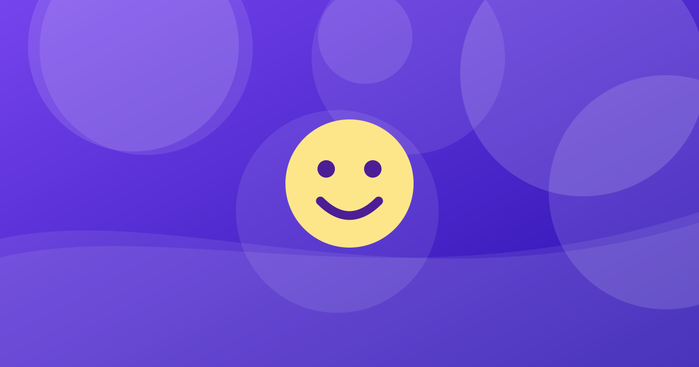

মানসিক চাপ সামলানোর স্বাস্থ্যকর পদ্ধতি

ছোট ছোট অভ্যাস চাপ সামলাতে সাহায্য করতে পারে।
লেখক: সম্পাদকীয় খসড়া (যাচাইকৃত যোগ্যতা নেই) · মেডিকেল রিভিউয়ার: এখনও নেই · প্রকাশ ও হালনাগাদের তারিখ: নির্ধারিত হয়নি · সম্পাদকীয় তথ্য
মানসিক চাপ কী
চাপ চ্যালেঞ্জের প্রতি শরীর ও মনের স্বাভাবিক প্রতিক্রিয়া, কিন্তু দীর্ঘস্থায়ী হলে ক্ষতি করতে পারে।
চাপের সাধারণ লক্ষণ
ঘুমের সমস্যা, মাথাব্যথা, খিটখিটে ভাব, মনোযোগে অসুবিধা বা পেশিতে টান দেখা দিতে পারে। এগুলো অন্য রোগেরও লক্ষণ হতে পারে, তাই নিজে নিজে রোগ নির্ণয় করবেন না।
কিছু স্বাস্থ্যকর উপায়
গভীর শ্বাস, নিয়মিত শারীরিক কার্যকলাপ, পর্যাপ্ত ঘুম, কাজ ভাগ করে নেওয়া এবং ভরসাযোগ্য কারও সঙ্গে কথা বলা।
কখন সাহায্য নেবেন
দৈনন্দিন কাজ ব্যাহত হলে বা নিজের ক্ষতির চিন্তা এলে এখনই কোনো স্বাস্থ্যকর্মী বা বিশ্বস্ত ব্যক্তির সাহায্য নিন। (প্রকাশের আগে যাচাইকৃত স্থানীয় হেল্পলাইন যোগ করুন।)
মূল কথা
ছোট ছোট অভ্যাস চাপ সামলাতে সাহায্য করতে পারে। ব্যক্তিগত উপসর্গ বা চিকিৎসা নিয়ে সিদ্ধান্তের আগে চিকিৎসকের সঙ্গে কথা বলুন।
তথ্যসূত্র
- WHO: Stress (প্রকাশের আগে লিংক ও তথ্য মিলিয়ে নিন)